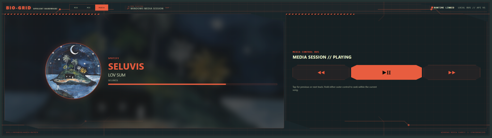
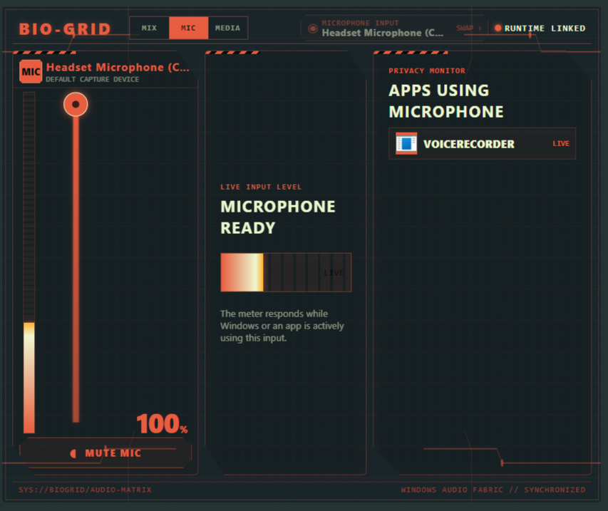

AUDIO CONTROL / AVAILABLE NOW
AUDIO MODULE.
MIX. MIC. MEDIA.
Turn XENEON EDGE into your dedicated touch audio console. Balance apps, switch listening devices, manage your microphone and control playback.
BY OPULENT HARDWARE


Everything in balance.
Adjust master and per-app volume, tap to mute, and switch between your speakers, headphones and headsets.
- Live audio meters
- Grouped app sessions
- Search, pin and reorder remembered apps

Be heard. Stay in control.
Choose your microphone, set its gain, mute with a tap and check Windows microphone activity.
- Default microphone switching
- Live input level
- See apps using your microphone
Now playing. Now in control.
Artwork, title, artist, album and track progress, with play/pause and track controls.
- Tap Previous / Next to skip
- Hold to seek when supported by the media app
- Tap the artwork panel to toggle its blurred background
SEE IT IN ACTION
Your audio, within reach.
Animated product demonstration using the widget interface.
A LOCAL CONNECTION
The companion completes the console.
Opulent Hardware Module Runtime connects the widget to Windows audio and media services. No account. No cloud dependency. Audio stays on your PC.
Download & set upS / M / L / XL
Purpose-built horizontal XENEON EDGE layouts.
LATEST LOCAL ARTWORK IMPROVEMENTS
Widget 1.1.1 and Runtime 1.0.2 add retries and artwork retention for natural track changes and browser-video autoplay.
Media artwork and seeking depend on what the playback app shares with Windows. Get the latest published widget through iCUE / Marketplace.